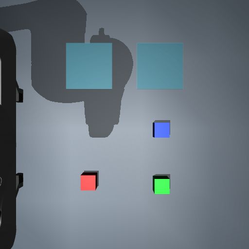

PROJECT 02 · ROBOTICS DATA ENGINEERING
Robot Episode Data Platform
From a robot experiment to a dataset you can inspect, rebuild and trust.
I built a local data platform that preserves camera observations, events, actions, model outputs and outcomes, then links them to versioned analytical datasets and evaluation reports.
01 / THE DATA PROBLEM
A score needs a traceable experiment
A successful robot task can have incomplete data. A failed task can have complete, useful evidence. I designed the platform to keep task outcome, completeness, quality and model validity separate, so analysts can understand both successful and failed experiments.
- Preserve before projection: original bytes and receipts remain available when database projection needs recovery.
- Replay without execution: repeated delivery rebuilds data projections without another robot task or model call.
- Version analytical inputs: published datasets bind source hashes, explicit assignments, code identity and quality checks.
02 / IMPLEMENTED ARCHITECTURE
An evidence path from capture to evaluation
- CaptureMuJoCo / Panda images, events and measured outcomes
- Preserve & validateContent-addressed raw bytes, receipts and reference checks
- ProjectTransactional PostgreSQL metadata with duplicate identities controlled
- PublishPrefect → frozen inputs → Parquet / DuckDB
- Evaluate & inspectDataset-linked reports → FastAPI → Streamlit
An offline, replaceable vision-language adapter produces separate proposal attempts. Its inputs exclude evaluator targets and reference poses. Proposals never operate the robot.
03 / MEASURED RESULTS · 9 NOVEMBER 2026
Reliable data, repeatable results
Raw replay covered 71 robot episodes and 93 exploratory proposal attempts, including development evidence. These counts measure data integrity, not model accuracy. Historical datasets remain reproducible after the catalog grows.
The separate structured simulator baseline completed 54/54 tasks in the fixed, bounded scene. It uses known simulator handles; repetition seeds do not establish general visual grounding or physical-robot performance.
Download complete measured evidence and provenance04 / ENGINEERING VALIDATION
Rebuild the data without repeating the experiment
- 110 passing local checks: 103 core, analytics and evaluation checks plus seven dashboard acceptance checks.
- Duplicate-safe raw replay: 71 robot episodes and 93 model attempts replayed without changing database fact counts. These audit totals include earlier development attempts.
- Historical reproducibility: both historical datasets and the benchmark dataset rebuilt with matching logical tables and metrics.
- Fresh application-volume test: a separate Docker workspace completed capture, inference, ingestion, a real Prefect flow, rebuild, evaluation, dashboard health and replay.
The fresh-volume check reused built images and prepared read-only model weights. The published source also passed its core/data-platform, simulator and dashboard GitHub Actions checks. Full-workflow reproduction on other hosts and exhaustive host power-loss behavior remain unverified.
05 / SEE THE ROBOTICS CONTEXT
One captured episode, before and after
These actual development images illustrate the observation-to-outcome trace. They come from a separate development episode, not additional benchmark trials. The baseline controller uses known simulator handles.


Download the source bundle, follow its README to generate a development dataset, then open the local dashboard. The included three-minute walkthrough covers Overview, Episodes, Evaluations, Proposals and Data quality. The full optional model benchmark takes longer than the development quick start.
06 / FUTURE ENHANCEMENTS
Improve language-driven planning
The episode data platform is implemented and independently reproducible. My next enhancement is to improve the optional language-planning provider, investigate constrained structured outputs and evaluate broader scenes with a newly frozen test set.
An exploratory adapter has already been evaluated, but its provider did not meet the required plan-output contract. Its original unsuccessful results remain in the technical documentation. This is an experimental extension, not a validated robot-planning capability; proposals cannot execute actions.
Enhancement plan and existing evaluation07 / RUN IT YOURSELF
Reproduce the workflow locally
Use Docker Desktop with Linux containers and PowerShell. No physical robot, dedicated GPU or paid API is required. Initial builds download dependencies and robot assets.
Clone the repository, then run these commands from its root:
git clone https://github.com/utsav-chokshi/robot-episode-data-platform.git
cd robot-episode-data-platform
./scripts/Initialize-LocalEnvironment.ps1
docker compose up --build -d --wait api
docker compose --profile simulation run --build --rm simulator suite
docker compose --profile ingestion run --rm ingestor
docker compose --profile pipelines run --build --rm pipeline
docker compose --profile dashboard up --build -d --wait dashboardOpen the dashboard at http://localhost:8501, the API documentation at http://localhost:8010/docs and Prefect at http://localhost:4201. On a fresh setup, this creates the 17-case development dataset with expected successful, failed-grasp and rejected-request examples.
The archived benchmark in the technical documentation comes from a separate fixed run. Reproducing that optional benchmark requires preparing the local model weights and running all 54 structured and 90 model attempts. CPU inference took about 28 minutes in the measured run, in addition to builds and data processing.